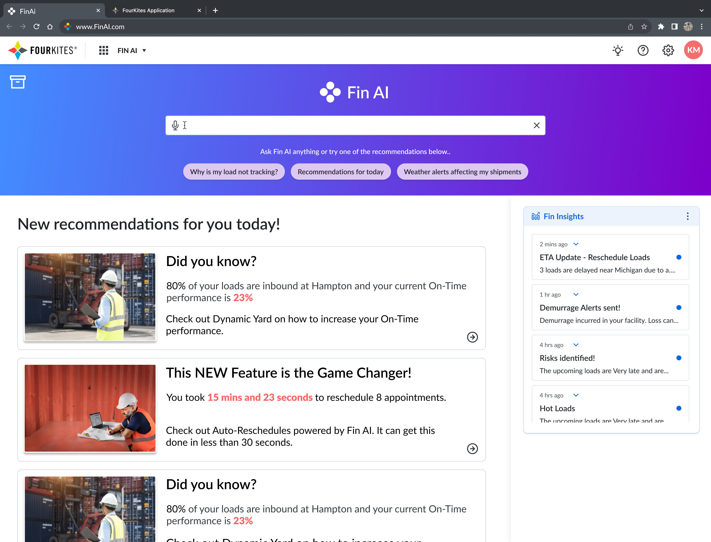

FIN AI: Intelligent Supply Chain Insights
Designing an AI-native insights layer that surfaces disruption risk before it becomes a costly delay.
Design Leadership · AI/ML Integration
Overview
FIN AI (FourKites Intelligence AI) is a natural-language interface built into the FourKites customer ecosystem. It helps customers surface buried insights, identify optimization opportunities, and automate time-consuming tasks — like assessing the impact of a disruption event across an entire shipment network. Built on the largest supply chain data network and an industry-leading LLM, FIN AI represents a shift from reactive to proactive decision-making, moving toward automated supply chain orchestration at scale.
By layering generative AI over previously siloed data, FIN AI gives users a natural-language way to explore, monitor, and act on supply chain data in real time, instead of hunting across dashboards and reports for the same answer.
FIN Canvas
FIN Canvas is the interaction model I designed for FIN AI: an AI-powered enterprise surface built to deliver precise, timely answers through a minimal UI rather than another dashboard to learn. It anticipates a shift in how users expect to work with enterprise software — less clicking through menus, more asking a direct question and getting exactly what's needed.
Design focus areas: minimal UI, maximum impact — simplified interfaces that reduce cognitive load; real-time responsiveness — immediate feedback that keeps users engaged; widgets generated on the go — dynamic UI created in response to the question being asked, not pre-built and waiting; personalized and tailor-made — experiences shaped around individual behavior; and a futuristic design approach that anticipates where enterprise UX is heading rather than reproducing existing dashboard patterns.


FIN Canvas redefines the enterprise UX pattern around simplicity, efficiency, and personalization — its AI-driven approach means users get the exact functionality they need at the exact moment they need it, rather than navigating to it.

Why this matters
Supply chain managers have historically operated in reactive mode — something breaks, then they go looking for why. FIN AI and FIN Canvas move that relationship toward proactive orchestration: the system surfaces what matters before a manager has to ask, and lets them ask follow-up questions in plain language when they need to go deeper. It's a foundational step toward eliminating the data silos that make supply chain visibility feel fragmented, even when the underlying data network is the largest in the industry.